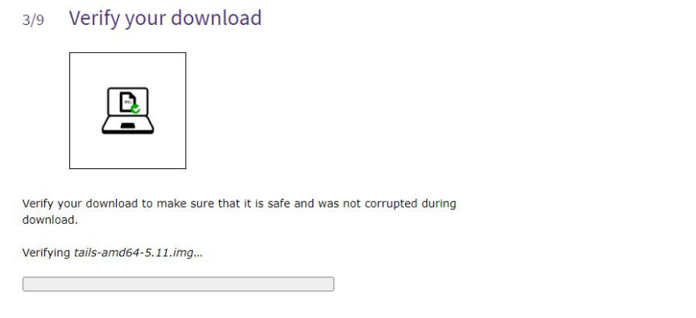
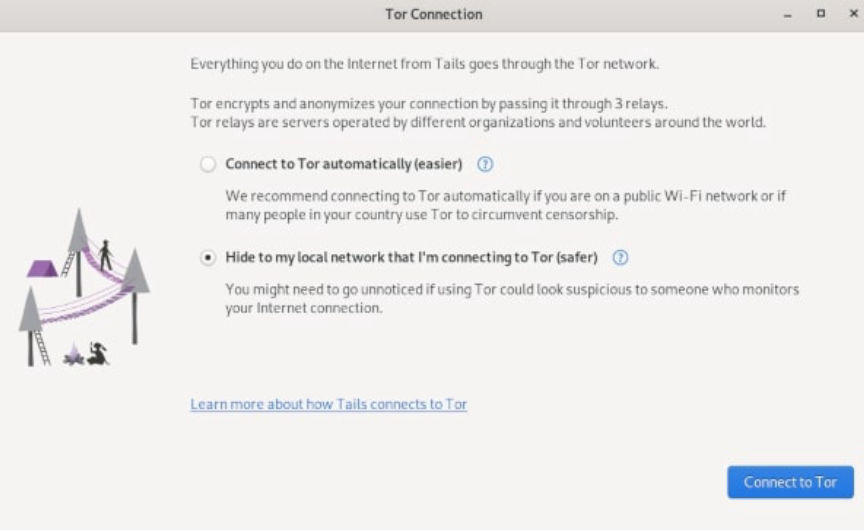
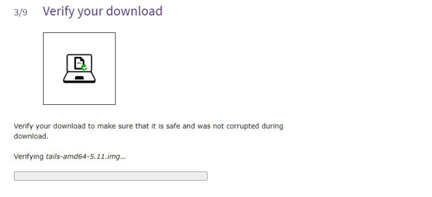
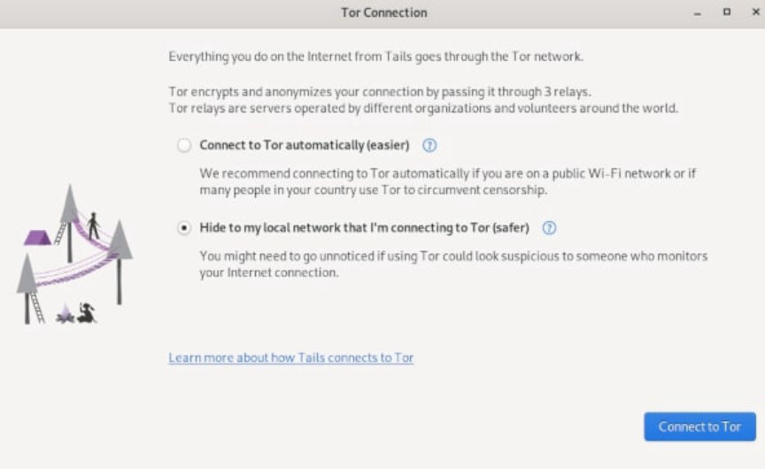

The Hitchhiker's Guide to Tails
Tails or The Amnesic Incognito Live System in full is a portable operating system that runs from a USB drive or DVD. Tails is designed to protect its users' privacy and anonymity. It erases all traces of what the user did and makes all connections to the internet go through the Tor Network.
When you boot your computer from the Tails USB drive connected to your PC, Tails starts running without using your device's hard disk. Tails is also independent of the other operating system installed on your device.
Since Tails only runs from the memory of your computer, it does not keep a record of your internet usage or anything you do on the device. When you shut down your computer, the memory is cleared, leaving no traces of what you did on the device.
To protect your privacy and anonymity on the internet, Tails forces every connection you make to the internet to go through the Tor network. With Tor, third parties cannot tell what websites you visit. You're able to visit websites anonymously and can change identities at will. Your browsing habits are secured from advertisers and other online trackers.
The following is a step-by-step guide to how you can install Tails on a USB drive for your Windows PC.
You will need;
Go to the download page on the Tails official website. Download either the USB image or through BitTorrent. Using BitTorrent is way faster.

At the download page, verify the Tails you downloaded by clicking on the "Select your download" button and selecting the file you just downloaded.

To install Tails to your USB drive, you will need a USB installer.
Download balenaEtcher for Windows and open the file once the download is complete
Plug your USB drive into your PC.
On balenaEtcher click on the "Flash from file" button and select the Tails you downloaded.
Click on the "Select target" button and select your USB drive.
Click on the "Flash" button and wait for the installation to complete.
Restart your PC and set it to start and run on the USB drive.
In the Boot Menu select your USB drive and press Enter.
Your PC will start on Tails, the boot loader will appear and Tails will start.
In the Tails "welcome screen" set your desired language and keyboard layout.
Click on "Start Tails" to open the Tails desktop.
Open the system menu on the right-hand corner of your screen. Click on "Wi-Fi Not Connected" and select the network you want to connect to.

The Tor Connection screen will appear, choose how you want to connect to Tor and click on the "Connect to Tor" button.

You will then be redirected to the Tor Browser on Tails.
When you shut down Tails, everything you may have done disappears. Depending on what your threat model is, you may decide to save some of your files and configurations.
To do this, you will need to set up Tails encrypted Persistent Storage on your USB drive.
At Tails desktop, click on the "Applications" menu in the top-left corner and choose "Persistent Storage". Click on continue in the window that opens.
In the window that follows, set a strong passphrase for your persistent storage.
Click on the "Create Persistent Storage" button after you set and confirm your passphrase.
Next, turn on the features of Persistent storage you need.
To access files you save in the persistent storage, go to the "places" menu and then click on persistent.
In addition to Tor, Tails gives you access to; Kleopatra, for PGP encryption; Thunderbird, for encrypted emails; OnionShare, for sharing files over Tor; Metadata Cleaner, to remove metadata from files; and other software to help you protect your privacy.
Tails can't protect you in cases where your device has been compromised. It also can't protect you from malicious Tor exit nodes if your data is not encrypted.
Always make sure you are using the latest version of Tails to reduce the risk of your privacy and anonymity being compromised.
When you boot your computer from the Tails USB drive connected to your PC, Tails starts running without using your device's hard disk. Tails is also independent of the other operating system installed on your device.
Since Tails only runs from the memory of your computer, it does not keep a record of your internet usage or anything you do on the device. When you shut down your computer, the memory is cleared, leaving no traces of what you did on the device.
To protect your privacy and anonymity on the internet, Tails forces every connection you make to the internet to go through the Tor network. With Tor, third parties cannot tell what websites you visit. You're able to visit websites anonymously and can change identities at will. Your browsing habits are secured from advertisers and other online trackers.
Installing Tails on a USB Drive
The following is a step-by-step guide to how you can install Tails on a USB drive for your Windows PC.
You will need;
- A USB drive with a minimum of 8GB storage space. Installing will format the USB drive, make sure you save all the files you need elsewhere.
- A minimum of 2GB RAM on your computer.
- Windows 7 and above.
Download Tails
Go to the download page on the Tails official website. Download either the USB image or through BitTorrent. Using BitTorrent is way faster.
Verify your Download

Verify your file
At the download page, verify the Tails you downloaded by clicking on the "Select your download" button and selecting the file you just downloaded.
File verified
Download USB Installer
To install Tails to your USB drive, you will need a USB installer.
Download balenaEtcher for Windows and open the file once the download is complete
Install Tails
Plug your USB drive into your PC.
On balenaEtcher click on the "Flash from file" button and select the Tails you downloaded.
Flash from file
Click on the "Select target" button and select your USB drive.
Select your USB drive
Click on the "Flash" button and wait for the installation to complete.
Install complete
Running Tails
Restart your PC and set it to start and run on the USB drive.
In the Boot Menu select your USB drive and press Enter.
boot loader
Your PC will start on Tails, the boot loader will appear and Tails will start.
Configuring Tails
In the Tails "welcome screen" set your desired language and keyboard layout.
Tails welcome screen
Click on "Start Tails" to open the Tails desktop.
Connect to the Internet
Open the system menu on the right-hand corner of your screen. Click on "Wi-Fi Not Connected" and select the network you want to connect to.
Connect to a wifi network
The Tor Connection screen will appear, choose how you want to connect to Tor and click on the "Connect to Tor" button.

Connect to Tor
You will then be redirected to the Tor Browser on Tails.
Creating Persistent Storage on Tail
sWhen you shut down Tails, everything you may have done disappears. Depending on what your threat model is, you may decide to save some of your files and configurations.
To do this, you will need to set up Tails encrypted Persistent Storage on your USB drive.
At Tails desktop, click on the "Applications" menu in the top-left corner and choose "Persistent Storage". Click on continue in the window that opens.
Select Persistent Storage
In the window that follows, set a strong passphrase for your persistent storage.
Set a strong passphrase
Click on the "Create Persistent Storage" button after you set and confirm your passphrase.
Next, turn on the features of Persistent storage you need.
Turn on Persistent storage features
To access files you save in the persistent storage, go to the "places" menu and then click on persistent.
In addition to Tor, Tails gives you access to; Kleopatra, for PGP encryption; Thunderbird, for encrypted emails; OnionShare, for sharing files over Tor; Metadata Cleaner, to remove metadata from files; and other software to help you protect your privacy.
Tails can't protect you in cases where your device has been compromised. It also can't protect you from malicious Tor exit nodes if your data is not encrypted.
Always make sure you are using the latest version of Tails to reduce the risk of your privacy and anonymity being compromised.